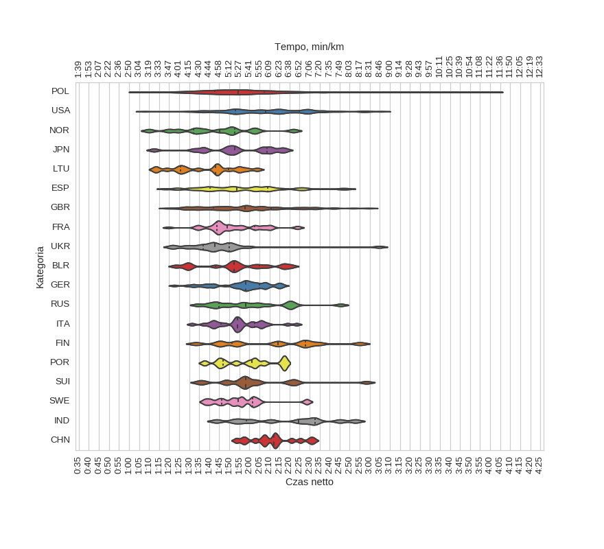

12 Półmaraton Warszawski (2017)
Histogramy
Klasyfikacja generalna
|
mean |
std |
min |
25% |
50% |
75% |
max |
| czas |
1:56:04 |
0:19:00 |
1:01:11 |
1:43:01 |
1:54:23 |
2:07:30 |
4:02:29 |
kobiety
|
mean |
std |
min |
25% |
50% |
75% |
max |
| czas |
2:06:56 |
0:17:31 |
1:10:24 |
1:55:00 |
2:05:27 |
2:17:32 |
3:12:23 |
mężczyźni
|
mean |
std |
min |
25% |
50% |
75% |
max |
| czas |
1:52:06 |
0:17:56 |
1:01:11 |
1:39:28 |
1:50:18 |
2:01:56 |
4:02:29 |
Wykresy rybkowe
wg płci
|
czas_netto_s |
count |
|
mean |
std |
min |
25% |
50% |
75% |
max |
|
| plec |
|
|
|
|
|
|
|
|
| K |
2:06:56 |
0:17:31 |
1:10:24 |
1:55:00 |
2:05:27 |
2:17:32 |
3:12:23 |
3265 |
| M |
1:52:06 |
0:17:56 |
1:01:11 |
1:39:28 |
1:50:18 |
2:01:56 |
4:02:29 |
8919 |
wg kategorii
|
czas_netto_s |
count |
|
mean |
std |
min |
25% |
50% |
75% |
max |
|
| kat |
|
|
|
|
|
|
|
|
| K20 |
2:05:13 |
0:17:18 |
1:10:24 |
1:53:50 |
2:05:05 |
2:15:18 |
3:09:07 |
763 |
| K30 |
2:05:23 |
0:16:58 |
1:11:31 |
1:54:12 |
2:03:36 |
2:16:02 |
3:12:23 |
1427 |
| K40 |
2:09:08 |
0:17:40 |
1:24:03 |
1:56:12 |
2:07:52 |
2:20:08 |
3:09:32 |
884 |
| K50 |
2:14:15 |
0:17:40 |
1:34:13 |
2:00:48 |
2:13:15 |
2:24:33 |
2:59:34 |
162 |
| K60 |
2:18:46 |
0:21:53 |
1:42:26 |
2:00:43 |
2:15:06 |
2:34:44 |
2:59:59 |
27 |
| M20 |
1:49:47 |
0:17:28 |
1:01:11 |
1:38:20 |
1:49:01 |
1:59:57 |
3:02:42 |
1324 |
| M30 |
1:51:04 |
0:17:52 |
1:03:43 |
1:38:45 |
1:49:35 |
2:00:38 |
3:29:22 |
3602 |
| M40 |
1:52:13 |
0:17:22 |
1:10:18 |
1:39:38 |
1:50:05 |
2:01:53 |
3:10:02 |
3030 |
| M50 |
1:56:15 |
0:17:20 |
1:19:29 |
1:43:42 |
1:54:12 |
2:06:31 |
3:07:41 |
721 |
| M60 |
2:03:24 |
0:18:29 |
1:24:17 |
1:50:55 |
2:00:15 |
2:15:38 |
3:00:50 |
215 |
| M70 |
2:22:25 |
0:28:01 |
1:41:50 |
2:02:38 |
2:19:06 |
2:34:04 |
3:24:47 |
26 |
wg krajów

|
czas_netto_s |
count |
|
mean |
std |
min |
25% |
50% |
75% |
max |
|
| kraj |
|
|
|
|
|
|
|
|
| BLR |
1:53:02 |
0:17:50 |
1:23:22 |
1:43:11 |
1:52:31 |
2:05:03 |
2:20:55 |
17 |
| CHN |
2:11:37 |
0:11:40 |
1:53:31 |
2:04:43 |
2:12:17 |
2:17:37 |
2:31:59 |
15 |
| ESP |
1:56:45 |
0:20:57 |
1:18:03 |
1:40:29 |
1:53:44 |
2:08:58 |
2:48:35 |
43 |
| FIN |
2:11:09 |
0:24:40 |
1:33:27 |
1:51:22 |
2:14:22 |
2:28:00 |
2:55:03 |
12 |
| FRA |
1:51:48 |
0:13:53 |
1:19:40 |
1:43:51 |
1:48:55 |
2:02:33 |
2:24:22 |
39 |
| GBR |
1:58:18 |
0:21:55 |
1:19:19 |
1:42:00 |
1:57:46 |
2:10:55 |
2:59:29 |
83 |
| GER |
1:55:59 |
0:13:30 |
1:22:35 |
1:48:48 |
1:58:16 |
2:05:00 |
2:16:52 |
46 |
| IND |
2:18:08 |
0:22:47 |
1:43:40 |
1:58:29 |
2:24:24 |
2:32:37 |
2:52:51 |
11 |
| ITA |
1:54:57 |
0:12:05 |
1:31:23 |
1:45:44 |
1:53:55 |
2:02:35 |
2:23:32 |
29 |
| JPN |
1:53:27 |
0:18:19 |
1:12:30 |
1:43:10 |
1:52:42 |
2:08:41 |
2:17:49 |
15 |
| LTU |
1:37:50 |
0:15:59 |
1:13:13 |
1:25:34 |
1:43:14 |
1:49:41 |
2:03:53 |
17 |
| NOR |
1:43:28 |
0:19:43 |
1:10:02 |
1:32:15 |
1:45:08 |
1:52:50 |
2:21:59 |
13 |
| POL |
1:55:58 |
0:18:51 |
1:03:43 |
1:42:56 |
1:54:15 |
2:07:22 |
4:02:29 |
11553 |
| POR |
1:59:27 |
0:13:54 |
1:37:41 |
1:47:02 |
2:01:18 |
2:09:50 |
2:17:29 |
12 |
| RUS |
2:01:04 |
0:18:53 |
1:34:13 |
1:44:59 |
1:58:13 |
2:16:27 |
2:45:29 |
18 |
| SUI |
2:02:47 |
0:20:18 |
1:34:47 |
1:53:25 |
1:58:13 |
2:07:53 |
2:58:21 |
16 |
| SWE |
1:55:15 |
0:13:30 |
1:37:52 |
1:46:21 |
1:54:28 |
2:01:28 |
2:28:38 |
12 |
| UKR |
1:45:29 |
0:20:20 |
1:21:18 |
1:36:48 |
1:42:44 |
1:50:02 |
3:04:39 |
22 |
| USA |
2:09:00 |
0:22:11 |
1:07:56 |
1:52:53 |
2:08:03 |
2:25:02 |
3:05:45 |
84 |
wg nazwisk
|
czas_netto_s |
count |
|
mean |
std |
min |
25% |
50% |
75% |
max |
|
| nazwisko |
|
|
|
|
|
|
|
|
| DĄBROWSKI |
1:46:05 |
0:19:11 |
1:25:21 |
1:33:14 |
1:44:05 |
1:52:05 |
3:02:49 |
28 |
| JANKOWSKI |
1:56:57 |
0:17:37 |
1:35:56 |
1:44:12 |
1:56:28 |
2:06:51 |
2:36:22 |
21 |
| KAMIŃSKI |
1:55:15 |
0:19:30 |
1:29:08 |
1:41:37 |
1:46:32 |
2:05:07 |
2:37:06 |
26 |
| KOWALCZYK |
1:57:26 |
0:15:24 |
1:25:27 |
1:47:39 |
1:56:32 |
2:04:48 |
2:36:57 |
41 |
| KOWALSKI |
1:51:34 |
0:17:28 |
1:15:06 |
1:43:05 |
1:49:12 |
1:59:29 |
2:40:22 |
23 |
| KOZŁOWSKI |
1:59:04 |
0:20:42 |
1:20:17 |
1:45:45 |
1:57:20 |
2:12:16 |
2:37:03 |
20 |
| KRAWCZYK |
1:49:24 |
0:15:33 |
1:20:40 |
1:39:14 |
1:49:55 |
1:58:37 |
2:27:34 |
26 |
| LEWANDOWSKI |
1:52:46 |
0:17:42 |
1:24:22 |
1:41:51 |
1:51:19 |
2:03:39 |
2:36:52 |
25 |
| MAZUR |
1:56:02 |
0:17:03 |
1:23:58 |
1:47:52 |
1:55:06 |
2:10:20 |
2:21:50 |
20 |
| NOWAK |
1:52:40 |
0:20:29 |
1:18:15 |
1:36:53 |
1:50:00 |
2:02:41 |
2:37:07 |
37 |
| SZYMAŃSKI |
1:52:14 |
0:16:29 |
1:16:13 |
1:41:23 |
1:53:44 |
2:01:15 |
2:23:35 |
26 |
| WIŚNIEWSKI |
1:48:23 |
0:13:29 |
1:25:52 |
1:39:57 |
1:48:01 |
1:54:18 |
2:22:58 |
26 |
| WOŹNIAK |
1:54:10 |
0:19:43 |
1:08:26 |
1:44:06 |
1:52:16 |
2:05:25 |
2:36:41 |
24 |
| WÓJCIK |
1:56:10 |
0:14:42 |
1:34:27 |
1:45:52 |
1:55:06 |
2:05:16 |
2:36:22 |
28 |
| ZIELIŃSKI |
1:57:58 |
0:17:23 |
1:33:05 |
1:46:53 |
1:54:32 |
2:07:51 |
2:42:02 |
27 |
wg miejscowości

|
czas_netto_s |
count |
|
mean |
std |
min |
25% |
50% |
75% |
max |
|
| miejscowosc |
|
|
|
|
|
|
|
|
| BIAŁYSTOK |
1:53:51 |
0:15:10 |
1:19:33 |
1:43:46 |
1:53:46 |
2:01:22 |
2:36:37 |
79 |
| BYDGOSZCZ |
1:54:16 |
0:23:23 |
1:14:01 |
1:38:52 |
1:49:53 |
2:09:31 |
2:49:00 |
44 |
| GDAŃSK |
1:54:28 |
0:17:21 |
1:23:56 |
1:38:55 |
1:54:12 |
2:05:27 |
2:44:02 |
68 |
| GDYNIA |
1:53:35 |
0:18:00 |
1:20:40 |
1:42:36 |
1:52:41 |
2:02:50 |
3:09:32 |
47 |
| GRODZISK MAZOWIECKI |
1:54:32 |
0:16:00 |
1:26:57 |
1:41:34 |
1:54:35 |
2:05:53 |
2:29:38 |
48 |
| JÓZEFOSŁAW |
2:00:18 |
0:19:53 |
1:24:44 |
1:44:59 |
1:58:54 |
2:11:43 |
2:51:57 |
47 |
| JÓZEFÓW |
1:53:44 |
0:14:44 |
1:26:38 |
1:41:20 |
1:55:52 |
2:07:20 |
2:21:18 |
50 |
| KIELCE |
1:53:59 |
0:20:45 |
1:19:16 |
1:38:16 |
1:53:30 |
2:05:08 |
2:50:33 |
98 |
| KRAKÓW |
1:54:07 |
0:17:19 |
1:19:57 |
1:41:08 |
1:51:54 |
2:06:46 |
3:03:11 |
140 |
| LEGIONOWO |
1:56:16 |
0:17:26 |
1:19:24 |
1:44:28 |
1:53:02 |
2:07:46 |
2:47:21 |
88 |
| LONDON |
2:12:36 |
0:22:22 |
1:18:03 |
1:57:41 |
2:13:43 |
2:28:34 |
3:05:45 |
105 |
| LUBLIN |
1:53:38 |
0:17:40 |
1:14:17 |
1:39:51 |
1:52:19 |
2:05:15 |
2:40:47 |
181 |
| MARKI |
2:00:41 |
0:16:39 |
1:26:56 |
1:47:58 |
2:01:52 |
2:12:10 |
2:36:49 |
59 |
| MIŃSK MAZOWIECKI |
1:53:44 |
0:16:14 |
1:19:18 |
1:45:59 |
1:54:08 |
2:04:25 |
2:28:27 |
52 |
| OLSZTYN |
1:47:10 |
0:20:58 |
1:12:22 |
1:32:52 |
1:44:14 |
1:58:56 |
2:54:56 |
85 |
| OTWOCK |
1:56:35 |
0:18:49 |
1:17:50 |
1:45:30 |
1:57:54 |
2:06:29 |
2:52:19 |
61 |
| PIASECZNO |
1:52:57 |
0:19:26 |
1:09:26 |
1:39:59 |
1:49:55 |
2:04:02 |
3:02:49 |
158 |
| PRUSZKÓW |
1:52:42 |
0:15:41 |
1:22:21 |
1:43:33 |
1:51:27 |
2:01:50 |
2:29:51 |
93 |
| PŁOCK |
1:49:32 |
0:14:55 |
1:25:11 |
1:38:21 |
1:48:48 |
1:58:58 |
2:35:11 |
57 |
| RADOM |
1:50:47 |
0:15:05 |
1:16:39 |
1:40:14 |
1:52:50 |
1:59:01 |
2:36:57 |
96 |
| SIEDLCE |
1:53:31 |
0:18:19 |
1:12:42 |
1:42:33 |
1:51:19 |
2:07:09 |
2:45:23 |
63 |
| SKIERNIEWICE |
1:52:42 |
0:11:59 |
1:23:05 |
1:47:35 |
1:50:36 |
1:59:28 |
2:21:50 |
47 |
| TORUŃ |
1:47:25 |
0:16:11 |
1:18:04 |
1:36:26 |
1:47:01 |
1:58:50 |
2:33:37 |
48 |
| WARSAW |
1:56:20 |
0:15:23 |
1:22:12 |
1:45:02 |
1:54:43 |
2:08:09 |
2:31:59 |
106 |
| WARSZAWA |
1:57:17 |
0:18:53 |
1:09:29 |
1:44:16 |
1:55:28 |
2:08:50 |
3:24:47 |
5527 |
| WROCŁAW |
1:57:06 |
0:17:46 |
1:24:16 |
1:45:23 |
1:56:46 |
2:09:34 |
2:52:36 |
99 |
| ZĄBKI |
1:57:53 |
0:20:48 |
1:16:18 |
1:42:38 |
1:54:30 |
2:08:53 |
3:02:20 |
81 |
| ŁOMIANKI |
1:55:04 |
0:16:13 |
1:21:47 |
1:44:51 |
1:54:21 |
2:03:12 |
2:37:00 |
55 |
| ŁÓDŹ |
1:58:37 |
0:18:10 |
1:18:15 |
1:45:31 |
1:57:23 |
2:08:07 |
2:50:09 |
156 |
 Statystyki biegowe
Statystyki biegowe